Saturn - Dragon Force
 Por Gigacom - É
bem sabido que a maior parte dos jogos do Saturn ficaram lá no
Japão sem nunca terem aterrisado no ocidente, porém
outros vieram para essas bandas do planeta, ficaram bem conhecidos mas
acabaram sendo ofuscados por vários motivos (baixa popularidade
do console, grandes lançamentos para o Playstation... etc) e
acabaram por cair no esquecimento. Esse é o caso de Dragon Force.
Por Gigacom - É
bem sabido que a maior parte dos jogos do Saturn ficaram lá no
Japão sem nunca terem aterrisado no ocidente, porém
outros vieram para essas bandas do planeta, ficaram bem conhecidos mas
acabaram sendo ofuscados por vários motivos (baixa popularidade
do console, grandes lançamentos para o Playstation... etc) e
acabaram por cair no esquecimento. Esse é o caso de Dragon Force.
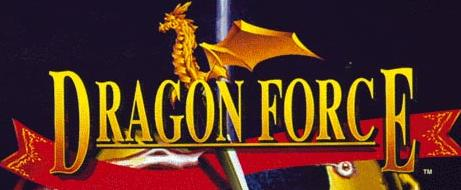
Trata-se de um game de
estratégia em tempo real, com uma histórinha para
ilustrar tudo, e batalhas épicas que só poderiam rolar no
Saturn (mais pra frente explico, continue lendo). Se me perguntarem
qual a história eu só vou poder dizer um sincero
NÃO SEI , pois nesse game isso literalmente é o de menos, e tambem porque não tive saco pra ficar lendo as
infindavéis legendas que rola no inicio contando a
histórinha do jogo... mas acho que tem a ver com algo como "o
mal ressurgiu e precisamos lutar contra ele", ou seja, o de praxe
, pois nesse game isso literalmente é o de menos, e tambem porque não tive saco pra ficar lendo as
infindavéis legendas que rola no inicio contando a
histórinha do jogo... mas acho que tem a ver com algo como "o
mal ressurgiu e precisamos lutar contra ele", ou seja, o de praxe .
.
No inicio do jogo
você tem a oportunidade de escolher um rei de uma das 8
nações para comandar. Cada rei tem um
objetivo como unificar o continente, trazer a paz e por um fim no "mal"
que apareceu, mesmo que para isso seja necessário recrutar
milhares de seus súditos e obrigá-los a apanhar dos
outros reis em seu glorioso nome . Chique não
. Chique não ?
?
Mas o jogo não é
só quebra pau, e é aí que aparece um dos trunfos
dele, a estrategia. Para conquistar, defender, fortificar cidades e
outras coisas mais, você terá a sua
disposição generais de guerra para executar essas
tarefas. Cada general tem uma classe especifica de
especialização (um é guerreiro, outro é um
mago, aquele nojento ali é um necromante vagabundo...) e um tipo
de tropa ao seu comando, que não necessáriamente precisa
ser da mesma classe do general. Portanto, pode rolar de você ver
uma ranger dando ordens para um exercito de magos, ou um general
guerreiro tendo que se virar com um exercito de zumbis... mas via de
regra, as coisas são mais ou menos dentro do esperado, só
de vez em quando é que aparecem uns doido meio malucos no
caminho . Enfim, esses generais são os que conduzem os exercitos,
conquistam e mantem controle sobre um dos vários castelos
espalhados pelo continente, e consequentemente mantem controle sobre
uma determinada região que ocupam.
. Enfim, esses generais são os que conduzem os exercitos,
conquistam e mantem controle sobre um dos vários castelos
espalhados pelo continente, e consequentemente mantem controle sobre
uma determinada região que ocupam.
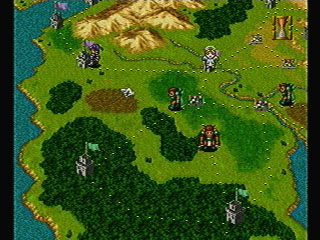 Os castelos todos estão interligados por caminhos predeterminados e imutavéis, e por esses caminhos os exercitos inimigos ou aliados caminham. Como o jogo corre em tempo real, é preciso ficar de olho nesses caminhos para que você não seja surpreendido, pois vai que cê decidi pegar até os velhinhos de uma cidade para formar um baita dum exercito para conquistar aquele castelo hyper fortificado do vizinho, e nesse meio tempo aparece um general gaiato do vizinho do outro lado e encontra sua querida cidade mal guarnecida?
Outra coisa interessante é que ao iniciar você tem ao seu dispor 2 ou 3 generais, mas conforme vence batalhas, você pode capturar generais inimigos e convencê-los a lutar do seu lado. Assim, é possivel aumentar o seu exercito e deixar alguns generais de prontidão nas cidades para protegê-las, enquanto um outro exercito seu se dedica nas batalhas por exemplo. E se o jogador se de mal e ao invés de capturar generais acaba por perder os que tem, ainda há a chance de procurar por mais generais dentro das cidades que domina, mas será preciso escolher bem quem irá fazer a busca por essas pessoas, pois ao invés de achar você pode é acabar assustando os carinhas com talento do seu reino. O rei da nação tambem é um general e pode liderar exercitos, porém se ele perder um embate... fudeu, é game over na hora.
Outra coisita interessante aqui é a politica. Veja: se o carinha que dá em cima da sua
namorada é seu inimigo, então alie-se com a ex namorada
dele ! É mais ou menos o que ocorre no game. É possivel
conquistar a amizade de outros reinos e fazê-los de aliados em
sua empreitada, aumentando a sua aréa de influência e o
seu exercito. É preciso tambem ficar de olho na moral dos seus
generais, pois aqueles que estão sempre conseguindo vitorias nas
batalhas irão precisar de coisas além de um "muito
obrigado, valeu por ter quase morrido ontem por mim". Rola um
esqueminha de premiação e graduação nesse
sentido. Você pode presentear os generais ou promovê-los
para que comandem mais tropas e obtenham mais prestigio.
! É mais ou menos o que ocorre no game. É possivel
conquistar a amizade de outros reinos e fazê-los de aliados em
sua empreitada, aumentando a sua aréa de influência e o
seu exercito. É preciso tambem ficar de olho na moral dos seus
generais, pois aqueles que estão sempre conseguindo vitorias nas
batalhas irão precisar de coisas além de um "muito
obrigado, valeu por ter quase morrido ontem por mim". Rola um
esqueminha de premiação e graduação nesse
sentido. Você pode presentear os generais ou promovê-los
para que comandem mais tropas e obtenham mais prestigio.
Já falei de como o jogo funciona mais ou menos... e convenhamos, não é só por originalidade ou forma de se jogar que um game fica conhecido, há outras coisas como gráficos, som, jogabilidade... e aí é que acontece a mágica toda. O Saturn tem uma capacidade no minimo peculiar para manipular gráficos em sprites. Reza a lenda que o Saturn consegue gerar e manter em movimento milhares de sprites ao mesmo tempo contanto que esses graficos caibam todos na memória. Ah tá, pra ninguem ficar boiando, sprites são figuras de desenhos que geralmente compõem joguinhos 2D como Sonic, Mario, Street Fighter... Continuando: tal capacidade era única do Saturn na geração de video games daquela época (N64 e Playstation ficavam anos luz de distância nesse quesito dele) e em Dragon Force é o que a gente mais vê rolar. Apenas pense: quando é que você viu pela primeira vez um jogo de estrategia, onde era possivel colocar 100 unidades de uma só vez, todas batalhando ao mesmo tempo e se movimentando numa boa sem lerdeira alguma? Pois é, em Dragon Force isso ocorre numa boa, e o Saturninho nem xia enquanto comanda tranquilo esse tanto de coisa ao mesmo tempo.
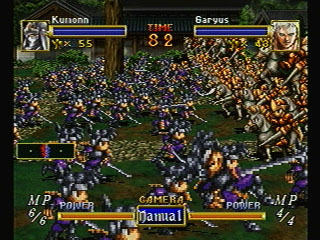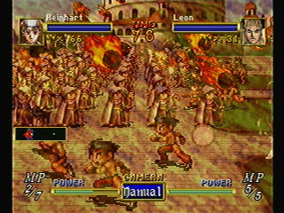
Algumas cenas de batalhas pequenas. Sim, pequenas, em cada imagem aparece
uns 90 e tantos bonequinhos mas ha batalhas com até 200 soldados .
.
Antes de rolar o fight, é
possivel escolher a formação do exercito e a primeira
ação a ser tomada quando começa a batalha. Por
exemplo, se você decide mandar uma tropa de magos contra uma
tropa de cavaleiros, será mais sensato deixar os magos em
fileira, parados no mesmo lugar e lançando magias enquanto a
cavalaria avança. Ou você vai mesmo querer ver o que
acontece quando um maguinho tenta bater num cavaleiro com um
pedaço de pau (tá, bastão para os fãs de
RPG ou varinha para os fãs de Harry Potter)? Os generais tambem
batalham, e possuem movimentos especiais como mágias, golpes do
tipo "mata tudo", "arrastão" e por aí vai, o que pode ser
decisivo em uma batalha, pois um general sozinho pode dar um belo
prejuizo no general inimigo e suas 100 unidades usando magias poderosas .
.
Como o jogo é bem extenso (você vai precisar de umas horinhas para zerar )há
a possibilidade de salvar o progresso na memória do Saturn,
porém é preciso ter quase metade da memória
disponivel só para o Dragon Force. Quem tem o Nights sabe como
é... alguns jogos mais antigos do Saturn consumem um
espaço absurdo para os arquivos de save deles, e Dragon Force
é um desses. O jogo é inteiramente compatível com
o cartucho de backup do Saturn, sendo que se esse cartucho estiver no
console, haverá a opção de salvar o progresso
à qualquer momento sem precisar chegar ao final de um turno.
)há
a possibilidade de salvar o progresso na memória do Saturn,
porém é preciso ter quase metade da memória
disponivel só para o Dragon Force. Quem tem o Nights sabe como
é... alguns jogos mais antigos do Saturn consumem um
espaço absurdo para os arquivos de save deles, e Dragon Force
é um desses. O jogo é inteiramente compatível com
o cartucho de backup do Saturn, sendo que se esse cartucho estiver no
console, haverá a opção de salvar o progresso
à qualquer momento sem precisar chegar ao final de um turno.
Reza a lenda havia várias versões de Dragon Force disponiveis no mercado. Na verdade, há somente um Dragon Force, porém a arte do encarte pode variar de CD para CD. Isso foi proposital e é apenas uma mudança cosmética, portanto repito: o jogo é o mesmo não importa que tipo de desenho na capa ele tenha.
Resumindo... Dragon Force é um jogão que absolutamente todos deveriam conhecer. Infelizmente com o passar dos anos ele acabou sendo esquecido, mas muitos que o conheceram em seus dias de gloria ainda hoje lembram com carinho e saudades das incriveis batalhas que só existem aqui. E para finalizar, mais algumas imagens que contam mais detalhes desse game:
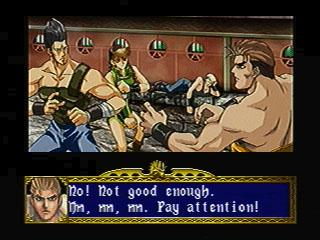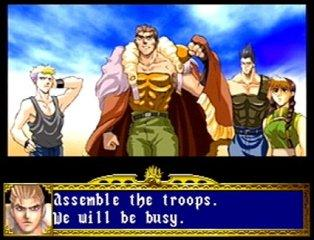
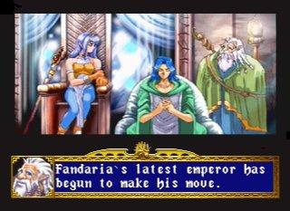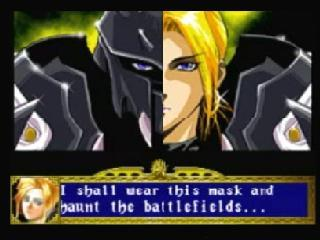
Cut scenes. Sempre que rola uma historinha elas aparecem aos montes.
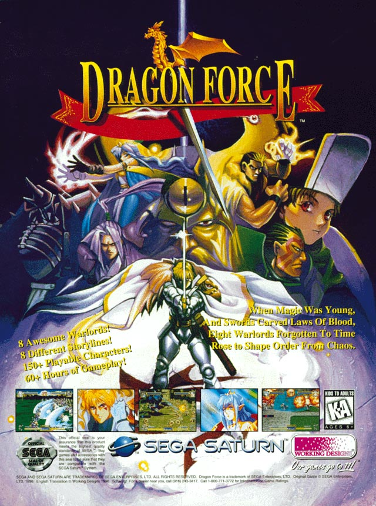
Propaganda em uma revista estrangeira. A Sega investiu um bocado para promover o jogo
mas a fama veio sozinha por conta da qualidade do jogo.
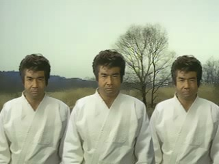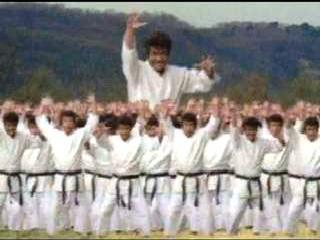
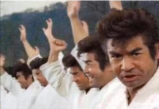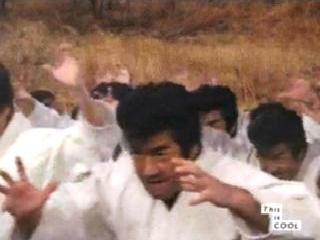
Segata SanshirOOOOOOOOOOOOO! Em uma perfomance única, incomparavél e REAL durante
uma batalha de Dragon Force. Na verdade, ele fez um videozinho pra promover o Dragon Force 2 .
.
Acesse o Trombone e comente sobre essa matéria!


Que tal acessar a sua conta do banco, com todo o conforto e comodidade de sua casa? Para isso, o pai de familia iria precisar do Telebradesco, um cartucho especial fabricado com exclusividade pela Tec Toy para o Bradesco; e tambem iria precisar pegar emprestado o Mega Drive do muleque para acessar...